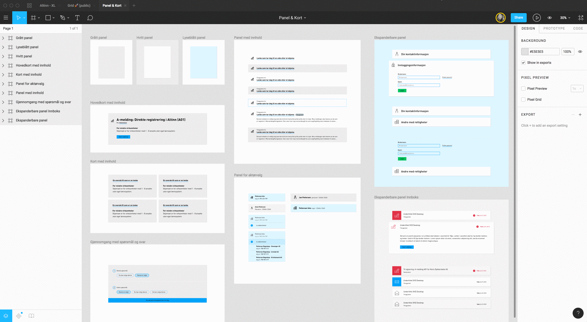
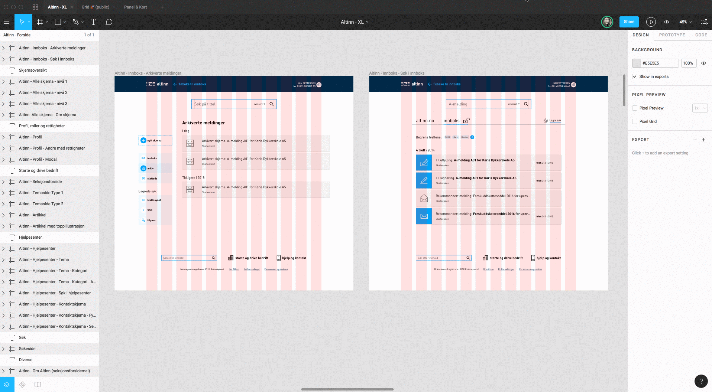

Kom i gang
Designere
Det er viktig å ha dedikerte designere i prosjektet som kjenner brukernes behov og kan lage gode offentlige digitale løsninger ved å gjenbruke komponentene på riktig måte.
Som designer kan du bruke designsystemet til å finne interaksjonselementer til å bygge nye eller videreutvikle webløsninger med. De ulike komponentene er laget for at de skal passe sammen i en større helhet. Det er derfor viktig å følge retningslinjene for hvordan disse brukes for å oppnå et konsistent og gjenkjennbart uttrykk over tid. Designsystemet vil hjelpe oss til å gjøre designprosessen mer fokusert på å løse konkrete designutfordringer for brukerne våre, ved at vi slipper å designe komponentene på nytt hver gang vi skal lage noe.
Gjenbruke eksisterende eller lage ny visuell profil
Skal løsningen knyttes opp mot en eksisterende merkevare vil du som designer benytte deg av samme visuelle profil som denne merkevaren. Siden designsystemet er et levende bibliotek av komponenter vil det over tid være behov for å justere og gjøre tilføyelser til den visuelle profilen.
For nye løsninger som skal bruke designsystemet anbefaler vi at så mye som mulig av egenskapene til de ulike komponentene arves. Det vil typisk være behov for å bruke en annen font, andre farger og gjøre små justeringer i styling. Grid og komponentenes responsive egenskaper er noe vi ser for oss kan gjenbrukes av alle. Hver merkevare får sitt eget “theme” i designsystemet.
Effektiv design av gode brukeropplevelser
Vi er opptatt av å forbedre måten vi designer produktene våre på og jobber med å organisere arbeidet med design og utvikling. Vi ønsker at alle prosjekter er med på å videreutvikle det felles biblioteket av komponenter med både design og kode. For designere vil dette i praksis si at Altinn som eiere av designsystemet ønsker å ta imot forslag til nye komponenter etter hvert som prosjektene ser behovet for det. Hvordan dette arbeidet skal organiseres jobber vi med.
Komponentbibliotek i Figma
For å kunne jobbe effektivt med interaksjonsdesign og nye konsepter, har vi satt opp et design-kit for Figma som inneholder alle komponentene i et såkalt “Team-library”. For å få tilgang til Altinns Figma-konto ta kontakt med Alise Kjelling.

Ved hjelp av “Team Library” deler vi komponenter på tvers av alle filer og prosjekter i Altinns Figmakonto. Filmen over viser hvordan komponentene er delt inn i “Lister”, “Skjemakomponenter” og så videre.
Masterkomponenter og instanser
Dersom en master-komponent oppdateres vil de ulike filene som bruker komponenten få en melding om oppdateringen og spørsmål om å oppdatere til nyeste versjon.
Filmen under viser eksempel på endring av en fargekomponent. Brukes fargen av en knapp, vil man i knappens fil få spørsmål om å oppdatere fargen. Herfra kan man igjen publisere den nye knappen, slik at disse endringene igjen når ut til alle filer som bruker knappen.

Hver masterkomponent eksisterer kun en gang. Alle instanser av komponenten lever sitt eget liv og endringer i disse vil ikke påvirke masterkomponenten. Man kan alltid resette en instans til å se ut som masterkomponenten igjen (ved å høyreklikke og velge “reset”).
Sett opp en ny mal i figma
For å lage en ny mal må du først kopiere griden du ønsker å bruke (som du finner i “Introduksjon” > “Grid”). Gå deretter inn i prosjektet du skal jobbe med (f.eks “Maler-Altinn”). Velg filen XL eller XS, alt ettersom om du skal lage en ny desktopskisse eller mobilskisse. Lim inn griden (den kan justeres i høyden, men ikke i bredden). Hent til slutt inn komponentene du trenger fra “Team Library” og gjør eventuelle justeringer på dem.

Variasjoner av komponenter
En komponent kan inneholde flere ulike varianter av lag du kan skru på og av. Dersom du f.eks henter inn komponenten “Standard liste” og ser i lagene, vil du finne skjulte lag du kan aktivere ved å bruke øyesymbolet.

Versjonskontroll
På hver fil har man mulighet til å vise versjonshistorikk. Her kan man enkelt gå tilbake i historikken dersom en komponent er ødelagt.

Prototyping
Når sidemaler befinner seg i samme fil, er det mulig å lenke mellom dem. På denne måten kan man sette opp en enkel klikkbar prototype som viser hvor de ulike lenkene fører deg hen.
